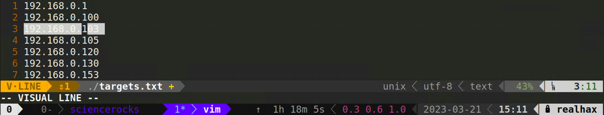
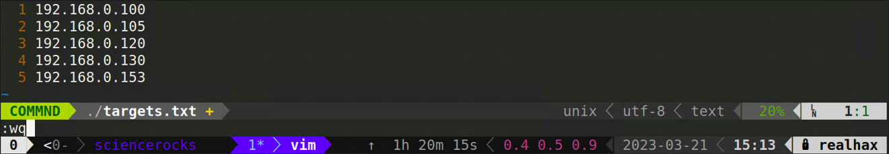
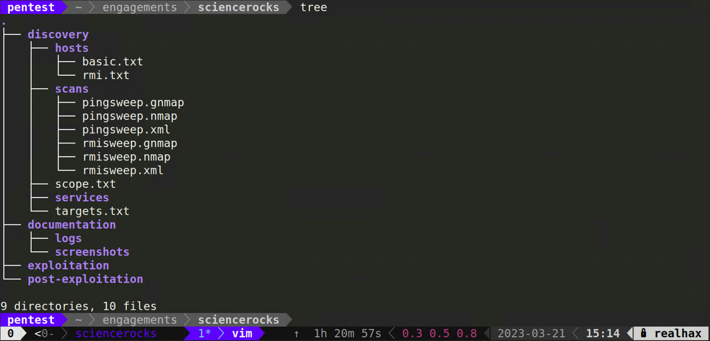

Host discovery with Nmap

Your first objective is to identify live assets or “hosts”. CD into your engagements/sciencerocks/discovery directory.
nmap -h
Nmap 7.93SVN ( https://nmap.org )
Usage: nmap [Scan Type(s)] [Options] {target specification}
TARGET SPECIFICATION:
Can pass hostnames, IP addresses, networks, etc.
Ex: scanme.nmap.org, microsoft.com/24, 192.168.0.1; 10.0.0-255.1-254
-iL <inputfilename>: Input from list of hosts/networks
-iR <num hosts>: Choose random targets
--exclude <host1[,host2][,host3],...>: Exclude hosts/networks
--excludefile <exclude_file>: Exclude list from file
HOST DISCOVERY:
-sL: List Scan - simply list targets to scan
-sn: Ping Scan - disable port scan
-Pn: Treat all hosts as online -- skip host discovery
-PS/PA/PU/PY[portlist]: TCP SYN/ACK, UDP or SCTP discovery to given ports
-PE/PP/PM: ICMP echo, timestamp, and netmask request discovery probes
-PO[protocol list]: IP Protocol Ping
-n/-R: Never do DNS resolution/Always resolve [default: sometimes]
--dns-servers <serv1[,serv2],...>: Specify custom DNS servers
--system-dns: Use OS's DNS resolver
--traceroute: Trace hop path to each host
SCAN TECHNIQUES:
-sS/sT/sA/sW/sM: TCP SYN/Connect()/ACK/Window/Maimon scans
-sU: UDP Scan
-sN/sF/sX: TCP Null, FIN, and Xmas scans
--scanflags <flags>: Customize TCP scan flags
-sI <zombie host[:probeport]>: Idle scan
-sY/sZ: SCTP INIT/COOKIE-ECHO scans
-sO: IP protocol scan
-b <FTP relay host>: FTP bounce scan
PORT SPECIFICATION AND SCAN ORDER:
-p <port ranges>: Only scan specified ports
Ex: -p22; -p1-65535; -p U:53,111,137,T:21-25,80,139,8080,S:9
--exclude-ports <port ranges>: Exclude the specified ports from scanning
-F: Fast mode - Scan fewer ports than the default scan
-r: Scan ports sequentially - don't randomize
--top-ports <number>: Scan <number> most common ports
--port-ratio <ratio>: Scan ports more common than <ratio>
SERVICE/VERSION DETECTION:
-sV: Probe open ports to determine service/version info
--version-intensity <level>: Set from 0 (light) to 9 (try all probes)
--version-light: Limit to most likely probes (intensity 2)
--version-all: Try every single probe (intensity 9)
--version-trace: Show detailed version scan activity (for debugging)
SCRIPT SCAN:
-sC: equivalent to --script=default
--script=<Lua scripts>: <Lua scripts> is a comma separated list of
directories, script-files or script-categories
--script-args=<n1=v1,[n2=v2,...]>: provide arguments to scripts
--script-args-file=filename: provide NSE script args in a file
--script-trace: Show all data sent and received
--script-updatedb: Update the script database.
--script-help=<Lua scripts>: Show help about scripts.
<Lua scripts> is a comma-separated list of script-files or
script-categories.
OS DETECTION:
-O: Enable OS detection
--osscan-limit: Limit OS detection to promising targets
--osscan-guess: Guess OS more aggressively
TIMING AND PERFORMANCE:
Options which take <time> are in seconds, or append 'ms' (milliseconds),
's' (seconds), 'm' (minutes), or 'h' (hours) to the value (e.g. 30m).
-T<0-5>: Set timing template (higher is faster)
--min-hostgroup/max-hostgroup <size>: Parallel host scan group sizes
--min-parallelism/max-parallelism <numprobes>: Probe parallelization
--min-rtt-timeout/max-rtt-timeout/initial-rtt-timeout <time>: Specifies
probe round trip time.
--max-retries <tries>: Caps number of port scan probe retransmissions.
--host-timeout <time>: Give up on target after this long
--scan-delay/--max-scan-delay <time>: Adjust delay between probes
--min-rate <number>: Send packets no slower than <number> per second
--max-rate <number>: Send packets no faster than <number> per second
FIREWALL/IDS EVASION AND SPOOFING:
-f; --mtu <val>: fragment packets (optionally w/given MTU)
-D <decoy1,decoy2[,ME],...>: Cloak a scan with decoys
-S <IP_Address>: Spoof source address
-e <iface>: Use specified interface
-g/--source-port <portnum>: Use given port number
--proxies <url1,[url2],...>: Relay connections through HTTP/SOCKS4 proxies
--data <hex string>: Append a custom payload to sent packets
--data-string <string>: Append a custom ASCII string to sent packets
--data-length <num>: Append random data to sent packets
--ip-options <options>: Send packets with specified ip options
--ttl <val>: Set IP time-to-live field
--spoof-mac <mac address/prefix/vendor name>: Spoof your MAC address
--badsum: Send packets with a bogus TCP/UDP/SCTP checksum
OUTPUT:
-oN/-oX/-oS/-oG <file>: Output scan in normal, XML, s|<rIpt kIddi3,
and Grepable format, respectively, to the given filename.
-oA <basename>: Output in the three major formats at once
-v: Increase verbosity level (use -vv or more for greater effect)
-d: Increase debugging level (use -dd or more for greater effect)
--reason: Display the reason a port is in a particular state
--open: Only show open (or possibly open) ports
--packet-trace: Show all packets sent and received
--iflist: Print host interfaces and routes (for debugging)
--append-output: Append to rather than clobber specified output files
--resume <filename>: Resume an aborted scan
--noninteractive: Disable runtime interactions via keyboard
--stylesheet <path/URL>: XSL stylesheet to transform XML output to HTML
--webxml: Reference stylesheet from Nmap.Org for more portable XML
--no-stylesheet: Prevent associating of XSL stylesheet w/XML output
MISC:
-6: Enable IPv6 scanning
-A: Enable OS detection, version detection, script scanning, and traceroute
--datadir <dirname>: Specify custom Nmap data file location
--send-eth/--send-ip: Send using raw ethernet frames or IP packets
--privileged: Assume that the user is fully privileged
--unprivileged: Assume the user lacks raw socket privileges
-V: Print version number
-h: Print this help summary page.
EXAMPLES:
nmap -v -A scanme.nmap.org
nmap -v -sn 192.168.0.0/16 10.0.0.0/8
nmap -v -iR 10000 -Pn -p 80
SEE THE MAN PAGE (https://nmap.org/book/man.html) FOR MORE OPTIONS AND EXAMPLES
1. Basic Ping Sweep
Usually all you need to uncover lots of juicy hosts (potential attack targets).
nmap -sn -iL scope.txt -oA scans/pingsweep
- -sn:
- Ping Scan - disable port scan
- -iL [inputfilename>]:
- Input from list of hosts/networks
- -oA [basename]:
- Output in the three major formats at once
1.1. Filter the results
Now you want to extract the IP address for all hosts reported as being “Up” and place them in a .txt file.
grep "Up" scans/pingsweep.gnmap | cut -d " " -f2 > hosts/basic.txt
2. RMI Host Discovery
Sometimes a system administrator will intentionally configure hosts to ignore ICMP requests making them difficult to discover.
Try this if the Basic Ping Sweep doesn’t yield the results you’re expecting.
The logic behind it is that systems were stood up for a reason and it’s likely the system administrator is too busy to physicaly login
every time maintenance is required.
For this reason it is highly likely they configured some sort of remote management interface. These ports are simply the most common ports used for remote administration.
You can tweak this scan to have more or fewer ports keeping in mind the more ports you’re checking the longer you’ll have to wait on large scopes.
nmap -Pn -n -p 22,445,80,443,3389 -iL scope.txt -oA scans/rmisweep
2.1. Filter the results
Same as before but this time grep on the string open to see IP addresses of hosts that had one of the RMI ports open. Some hosts could have multiple different RMI ports open so use sort -u to remote any duplicate entries.
grep "open" scans/rmisweep.gnmap | cut -d " " -f2 | sort -u > hosts/rmi.txt
3. Subnet hunting
What if the client has a Class A /8 network and with 16.7Mil possible IPs and has no idea where everything is? No problem!
The logic here is that hypothetically speaking, each /24 subnet is going to have a gateway on the .1 node.
So instead of checking for 16 million possible IPs we only need to check for 65 thousand possible gateways.
Warning DO NOT run this scan, I’ll explain :)
nmap -sn 192.1-255.1-255.1 --min-rate 10000 --min-hostgroup 1024 -oA scans/subnetsweep
- –min-hostgroup/max-hostgroup [size]:
- Parallel host scan group sizes (Secret sauce that tells nmap to check 1,024 hosts at a time instead of 64)
- –min-rate [number]:
- Send packets no slower than per second
3.1. Perform regular discovery on subnets
Here is a quick command to turn the subnetsweep.gnmap file into a new ranges.txt file that you can use for basic or RMI host discovery.
grep "Up" scans/subnetsweep | cut -d " " -f2 | awk -F "." '{print $1"."$2"."$3".0/24"}' > subnets.txt
4. Fishing Host Discovery
Now that you’ve completed your host discovery scans run this command to build your final targets.txt file which you’ll use for service discovery.
cat hosts/*.txt | sort -u > targets.txt
4.1 Finalize targets.txt file
Open up your targets.txt file in vim or whatever text editor you prefer 
Delete the following IP addresses from this file.
- 192.168.0.1 - Your Azure Lab VM
- 192.168.0.103 - Your Pentest VM

Get into the habbit of doing this early on, otherwise you will inevitably hack into your own machine while on a pentest one day. Don’t jude, we’ve all done it.
4.2. Project Folder
When all is said and done you’re project folder should look something like this.
